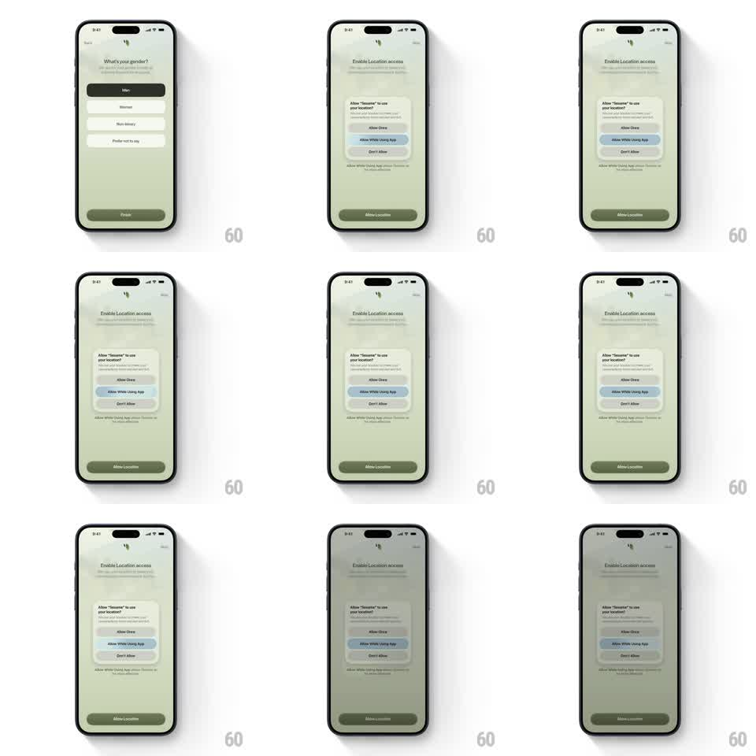

Media
Frame-by-frame

Rebuild this animation 1:1: Sesame's location permission screen - a "Enable Location access" page with a pulsing circular map-pin button that leads into the system permission prompt (Allow Once / Allow While Using App / Don't Allow).

Rebuild this animation 1:1: Sesame's location permission screen - a "Enable Location access" page with a pulsing circular map-pin button that leads into the system permission prompt (Allow Once / Allow While Using App / Don't Allow).
## Integration
Integration: stack-agnostic spec - springs given as stiffness/damping, timed motions as duration + curve; map every value to your framework and animation library of choice.
## Scene
Soft sage-green onboarding screen: back link, tiny leaf logo, "Enable Location access" title with subcopy, a centered map-pin visual, and a dark green "Allow Location" button. The iOS system alert ("Allow 'Sesame' to use your location?") appears centered over the dimmed screen.
## Motion spec
Pattern: pulsing CTA + system prompt handoff, ~2s loop then alert.
- Pulse: the circular pin button emits expanding rings (scale 1 -> 1.6, fading to 0, 1.4s each, staggered 400ms) while the pin itself bobs (translateY -4px, 1s alternate).
- Tap: the button contracts (scale 0.95, 100ms), then the screen dims (black 40%, 200ms) as the system alert scales in (0.92 -> 1, 250ms, ease-out) with a slight bounce.
- Choice: the selected alert row highlights (100ms) and the alert slides down and fades (200ms), the screen un-dimming behind it.
## Calibration
- The rings emanate from the button's exact center and never clip early.
- The system alert is pixel-faithful iOS styling - blurred white card, stacked actions.
## Reduced motion
Static button, alert appears with a 200ms cross-fade.
## Don't miss
- "Allow While Using App" is the visually suggested row (blue tint).
- The sage background and dark green button stay consistent before and after the alert.